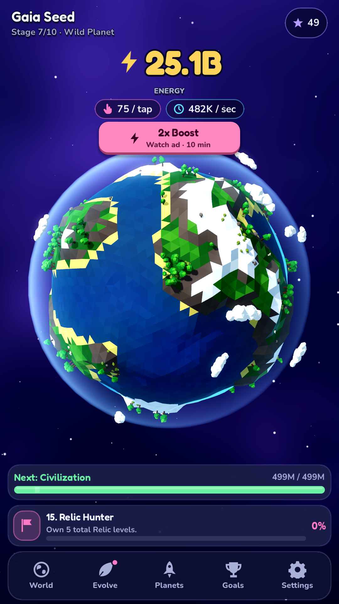
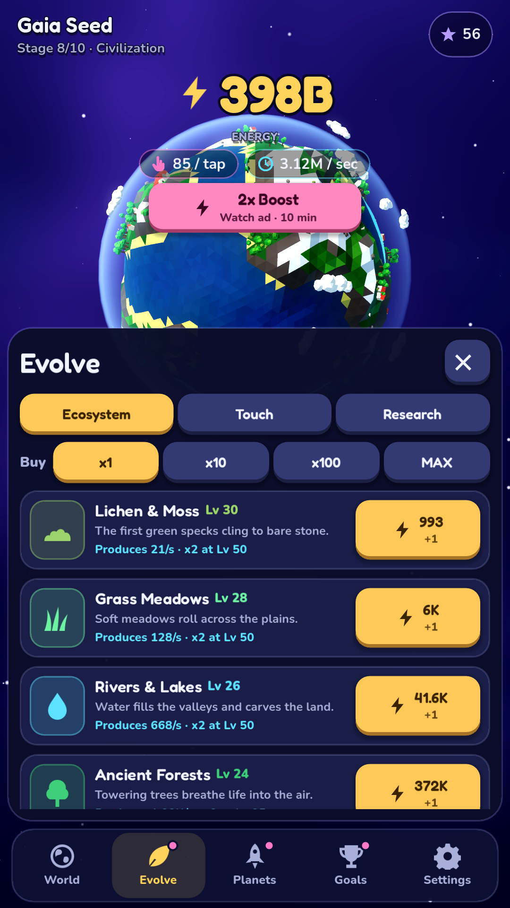
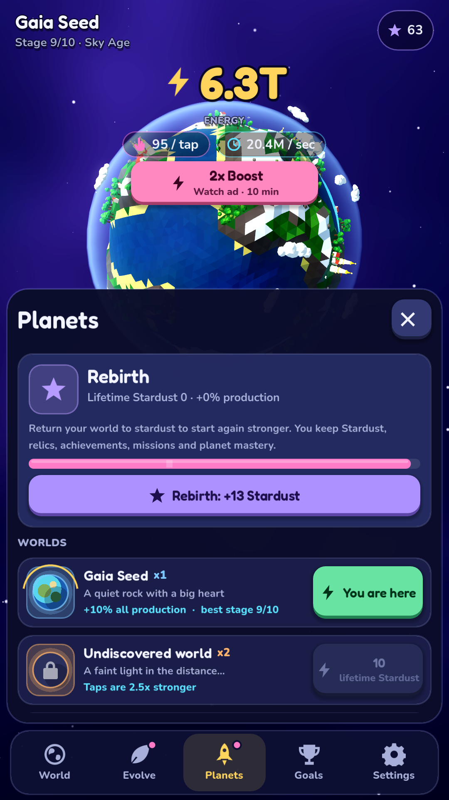
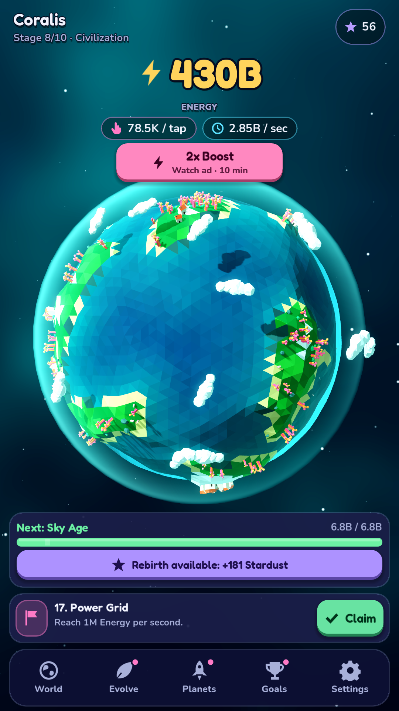
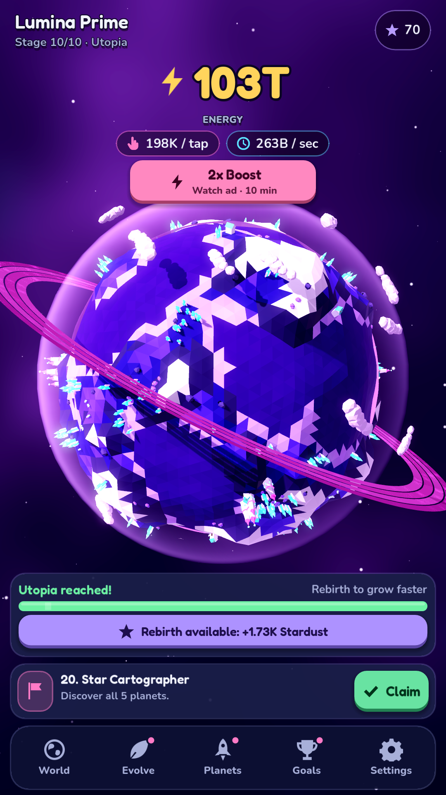
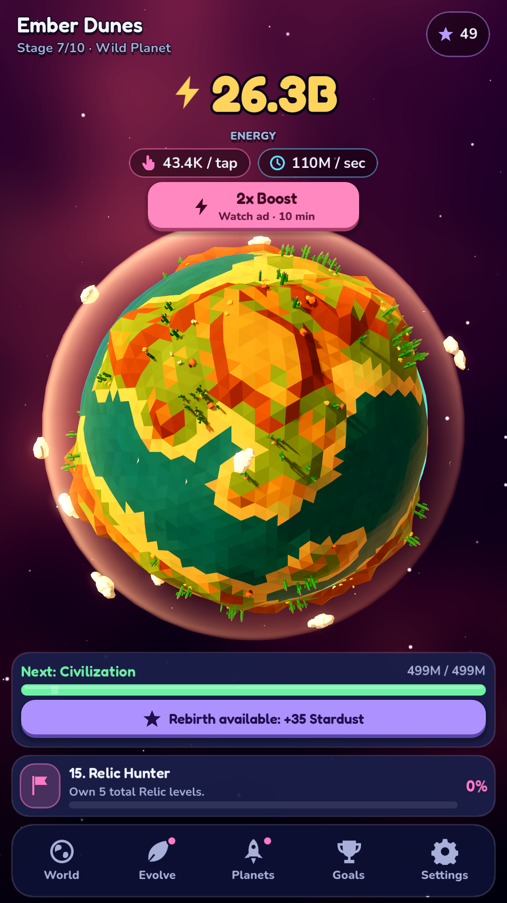
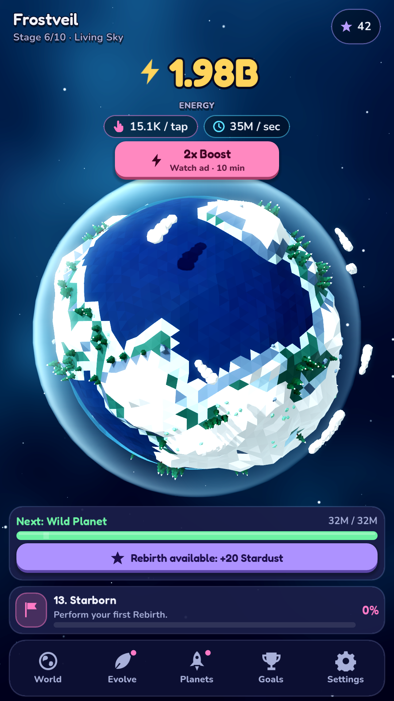

Living Gaia
Main World screen — developed Gaia Seed planet
Download original PNGAuthentic Godot-rendered screenshots exported from the actual game by the developer workflow — not AI-generated illustrations. These captures were made during development and may differ from the final release UI.
Tap “Download original PNG” beneath each image to save it to your phone and upload it to Google Play Console. On Android, if the image opens in your browser, open the browser menu and choose Download or long-press the image to save it.

Main World screen — developed Gaia Seed planet
Download original PNG
Actual upgrades and ecosystem screen
Download original PNG
World progression and permanent upgrades
Download original PNG
Ocean planet in the late stage
Download original PNG
Futuristic crystal world
Download original PNG
Desert planet
Download original PNG
Frozen planet
Download original PNGAll seven images come from the private Pocket Planet game repository's docs/store folder. Only these public-facing screenshot files have been copied here. The game source code remains private.